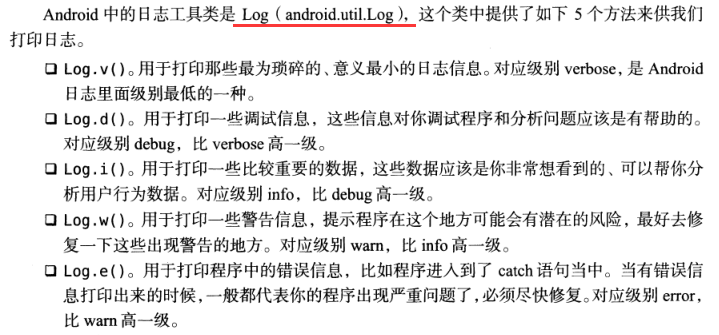
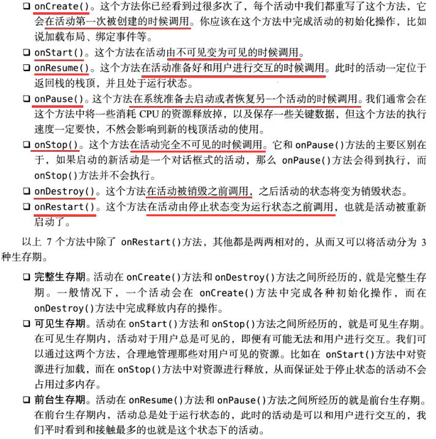
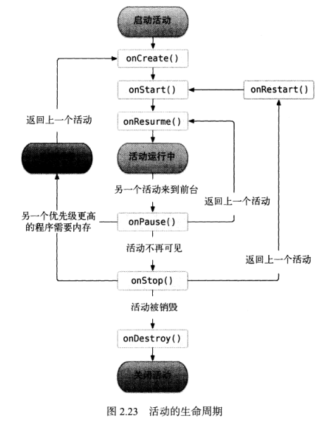
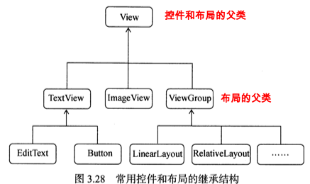

java简明教程and安卓开发
java基础¶
// 1.第一个java程序
// 类名:首字母大写，大小写敏感。public:公开的。static:静态的
package yuyang;
public class Hello {
public static void main(String[] args) {
System.out.println("Hello, world!");
}
}
// 1.1 包:package 类似c++的namespace，包可以有多层结构，用.隔开:yuyang.utils.xxx
// 1.1.1 不同package下的目录结构
package_sample // 根目录
- src // 放置源码
- hong
- Person.java
- ming
- Person.java
- mt
- yang
- Arrays.java
// 1.1.2 同一个包下的类间访问无需import xxx,可以直接访问:例如Main类中访问Person类 new Person();
// 1.1.3 访问其他包下面的类
import mt.yang.Arrays // import mt.yang.* // 导入这个包下所有类
public class Person {
public void run() {
Arrays arrays = new Arrays();
}
}
// 扩展:导入一个类中所有的静态字段和静态方法
import static java.lang.System.*; // 导入System类的所有静态字段和静态方法:
// 1.2 命令行参数: String[] args
for (String arg : args) { // 遍历输出
System.out.println(arg);
}
// 2.数据类型
// 整数类型：byte，short，int，long。举例:int x = 100;
// 浮点数类型：float，double。举例:float y = 1.34f;// f后缀是必须的
// 字符类型：char。举例:char a = 'a'/'中'; // 都占两个字节。单引号表示，双引号是字符串
// 字符串类型：字符串拼接: +。内容不可变特性:变量类似指针。空值:null表示(null != "")
//转义字符: \":",\':,\\:\,\n:换行,\r:回车,\t:tab符,\u####:表示一个Unicode编码的字符
//字符串类型：s1==s2:s1和s2必须指向同一对象(啥都一样)，s1.equals(s2):s1和s2只要类型+内容相同就行
//s1.equals(s2)时，如果变量s1为null，会报NullPointerException，所以:if ("hello".equals(s))或 者if (s1 != null && s1.equals("hello"))
// 布尔类型：boolean。举例:boolean b1 = true/false;
// 常量(不可二次赋值)：final double PI = 3.14; // final修饰常量，常量名常大写。
// var类型，var sb = new StringBuilder();//系统自动推断var为StringBuilder，主要是因为变量名太长,简写
// 类型强转:
// 2.1 大范围转小范围，强制转换:() --> int i=10;short a = (short)i; 超出范围可能得到错误结果。
// 2.2 小范围转大范围，自动转换:short+int=int，short<int<float<String(最高级别)
// 2.3 数组
int[] ns = new int[5];//访问:ns[0]。长度:ns.length。默认值:int=0,float=0.0,boolean=false;
int[] ns = new int[]{68, 79, 91, 85, 62};// 指定初始化元素，编译器自动推断大小
int[] ns = {68, 79, 91, 85, 62};// 进一步简写。
String[] names = {"aa","bb","cc"};
// 3.运算，注意:如果计算结果超出了范围，就会产生溢出，而溢出不会出错，却会得到一个奇怪的结果
int x = 120/11;// 10:属于整除结果
n += 100/n -= 100;
n ++/n--;
int a = n << 1;// 移位操作: 倍增:<<，倍减:>>，符号位跟着右移运算:n>>>1;
n = 0 & 0;// 位运算:& | ~ ^(异或)
// 3.1 注意:浮点数运算存在着误差。例如0.1换算成二进制是一个无限循环的小数，只能近似存储。
// 3.2 布尔运算
&& || ! > >= < <= == !=
false && x // 结果总是false，属于短路运算，因为第一个false就已经确定了，第二个不会被计算
// 3.3 三元运算符
b ? x:y; // b表达式为true,return x,else return y;// x和y的类型必须相同
// 4.流程控制
// 4.0 输入操作
import java.util.Scanner; // 导入某个类
...
// System.out代表标准输出流，而System.in代表标准输入流
Scanner scanner = new Scanner(System.in);//创建Scanner对象
String name = scanner.nextLine(); // 读取一行输入并获取字符串
int age = scanner.nextInt(); // 读取一行输入并获取整数,Scanner会自动转换数据类型,因此不必手动转换。
...
// 4.1 格式化输出:%(占位符)
// %d 格式化输出整数
// %x 格式化输出十六进制整数
// %f 格式化输出浮点数
// %e 格式化输出科学计数法表示的浮点数
// %s 格式化字符串
// %% 表示一个%字符本身
System.out.print("xxx "); // 不换行
System.out.printf("a = %.2f,b = %08x", d,d);// a=2位小数,b=格式化成十六进制，并用0补足8位.
// 4.2 if语句
if (n >= 90) {
// ...
} else if (n >= 60) {
// ...
} else {
// ...
}
// 4.3 switch,必须保证有break
switch (option) {
case 3:
...
break;
case 2:
...
break;
case 1:
...
break;
default:
...
break;
}
// 不带break的switch如何写？
switch (fruit) {
case "apple" -> System.out.println("Selected apple");
case "pear" -> System.out.println("Selected pear");
// case "apple","pear" -> System.out.println("Selected apple or pear");
case "mango" -> { // 新符号->,如果有多条语句，使用{}包裹
System.out.println("Selected mango");
System.out.println("Good choice!");
}
default -> System.out.println("No fruit selected");
}
// 4.4 while循环
while (条件表达式) {
// 循环语句
}
// do-while循环
do {
执行循环语句
} while (条件表达式);
// 4.5 for循环
for (初始条件; 循环检测条件; 循环后更新计数器) {
// 执行语句
}
// 举例子
for (int i=1; i<=100; i++) { // 初始化可以在for内部int i=1;
sum = sum + i;
}
// 高级用法
// 4.5.1 不设置结束条件:
for (int i=0; ; i++) {
...
}
//4.5.2 不设置结束条件和更新语句:
for (int i=0; ;) {
...
}
// 4.5.3 什么都不设置:
for (;;) {
...
}
// 4.6 for-each循环:常用来遍历数组,因为数组可迭代(Array,List,Map,...)
int[] ns = { 1, 4, 9, 16, 25 };
for (int n : ns) { // n直接表示元素
System.out.println(n);
}
// 5 数组操作
// 5.1 数组排序
import java.util.Arrays;
int[] ns = { 28, 12, 89, 73, 65, 18, 96, 50, 8, 36 };
System.out.println(Arrays.toString(ns));// 排序前
Arrays.sort(ns);// 开始排序
System.out.println(Arrays.toString(ns));// 排序后
// 5.2 多维数组
int[][] ns = {
{ 1, 2, 3, 4 },
{ 5, 6, 7, 8 },
{ 9, 10, 11, 12 }
};
ns[1][2];// 访问
// 循环访问
for (int[] arr : ns) {
for (int n : arr) {
System.out.print(n);
System.out.print(', ');
}
System.out.println();
}
面向对象编程¶
// 1 类
class Person {
private String name;// 私有属性，外部不可访问,如果没赋值,默认String=null,int=0,boolean=false;
private int age;
// 构造方法:无返回值，名称是类名，参数无限制，调用是必须使用new,如果不自己定义默认会自动生成一个，一旦一定后就不会再默认生成了，所以常常直接定义两个,所以构造方法可以定义多个
public Person(){
}
public Person(String name) {
this.name = name;
}
// 当然一个构造方法可以调用其他构造方法,调用方法，this()
public Person(String name,int age){
this(name);
this.age = age;
}
// 下面是普通方法的使用
public String getName() {// 公有方法,外部可以访问
return this.name;
}
public void setName(String name) {
// 对name进行检查
if (name == null || name.isBlank()) {
throw new IllegalArgumentException("invalid name");
}
// this变量:隐含的变量this，它始终指向当前实例。因此，通过this.field就可以访问当前实例的字段
this.name = name.strip(); // 去掉首尾空格
}
// 方法重载:方法同名，但参数不同(参数顺序、参数类型等)，一般而言返回值都是相同的。返回值类型不同不算
public void hello() {
System.out.println("Hello, world!");
}
public void hello(String name) {
System.out.println("Hello, " + name + "!");
}
}
// 1.1 修饰符
private:外部代码无法访问，内部代码可以访问
// 1.2 方法定义
修饰符 方法返回类型 方法名(方法参数列表) {
若干方法语句;
return 方法返回值;// 如果无返回值，返回类型void
}
// 1.3 方法传参，可变参数:可变参数用类型...定义，可变参数相当于数组类型,注意参数不能是null
public void setNames(String... names){this.names = names}; // 调用时传入的参数个数可以随意
// 等价于
public void setNames(String[] names){this.names = names}
// 1.3.1 方法的引用传参:例如传入数组名，这样，外部的数组改变，方法中的数组也会改变，类似指针
// 2 继承:extends，一个类只能继承自另一个类，不能从多个类继承，但可以实现多接口(见下文)
class Student extends Person{
// 无需重复写Person类中的已有方法，因为继承后已经包含
// 增加新的方法就行
public String hello(){
return "Hello" + super.name;// super关键字表示父类(==父类this),注意这里可以直接访问父类私有
}
}
// 2.1 修饰符
private:无法被其他类访问或子类无法访问父类的private字段或者private方法
protected:用于继承->用protected修饰的字段可以被子类或子类的子类访问
public:可以被其他类或所有子类访问
// 2.2 继承后的构造函数
class Student extends Person {
protected int score;
public Student(String name, int age, int score) {
// super(); 如果只是想调用无参的构造函数，这句可以省略
super(name, age); // 调用父类的构造方法Person(String,int),这样就保证了父类执行有参的构造函数
this.score = score;
}
}
// 2.3 向上转型(为多态铺路)
Person p = new Student(); // p instanceof Student : true
Object o1 = new Student();
// instanceof实际上判断一个变量所指向的实例是否是指定类型，或者是否是这个类型的子类
p instanceof Person; // ture
s instanceof Person;// true
null instanceof xxx;// false 如果一个引用变量为null，那么对任何instanceof的判断都为false
// 扩展，向下转型，用于强转
Person p1 = new Student(); // upcasting, ok
Student s1 = (Student) p1; // ok
Person p2 = new Person();
// 不能把父类变为子类，因为子类功能比父类多，多的功能无法凭空变出来。
Student s2 = (Student) p2; // runtime error! ClassCastException!
// 2.4 多态：Java的实例方法调用是基于运行时的实际类型的动态调用，而非变量的声明类型
class Person {
public void run() {
System.out.println("Person.run");
}
// 扩展:final修饰的方法不能被Override
public final String hello(){
return "Father Hello";
}
}
class Student extends Person {
@Override // 覆写:直接把父类方法覆盖，方法签名相同，并且返回值也相同
public void run() {
System.out.println("Student.run");
}
// 扩展，子类中想调用父类的被覆盖的方法
public void printFatherRun(){
return super.run();
}
}
Person p = new Student();
p.run();// 实际调用的是谁？答案:Student
public void runTwice(Person p) {
p.run();
p.run();
}
runTwice(xxx);// 传入的实例是谁就调用谁
// 2.5 final
// 2.5.1 final修饰的类不能被继承
final class Person{...}
// 2.5.2 final修饰的方法不能被Override
public final String Hello(){...}
// 2.5.3 final修饰的属性不能被改写
public final String name = "xiaoming";
// 2.5.4 final修饰的属性可以使用构造方法初始化，常用
class Person {
public final String name;
// 常用:，因为可以保证实例一旦创建，其final字段就不可修改
public Person(String name) {
this.name = name;
}
}
// 3 抽象类
// 3.1 抽象方法:如果父类的方法本身不需要实现任何功能，仅仅是为了定义方法签名，目的是让子类去覆写它，那么，可以把父类的方法声明为抽象方法,注意:有抽象方法的类必须是抽象类，否则无法编译
abstract class Person { //
public abstract void run(); // 此时无法编译Person类，因为它包含抽象方法，所以Person类无法被实例化
}
class Student extends Person {
@Override
public void run() { … }
}
// 4 接口:纯抽象类的省略定义，接口定义的所有方法默认都是public abstract的
interface Person{
void run();// 虽然没写，但是都是public abstract修饰的
// 扩展1:接口中可以定义default方法,注意:实现类可以不必覆写default方法。default方法的目的是，当我们需要给接口新增一个方法时，会涉及到修改全部子类。如果新增的是default方法，那么子类就不必全部修改，只需要在需要覆写的地方去覆写新增方法。
default void hello(){xxx;}// interface没有字段，default方法无法访问属性
}
// 4.1 具体类实现interface接口时
class Student implements Person{
@override
public void run(){xxx;}
}
//4.2 在Java中，一个类只能继承自另一个类，不能从多个类继承。但是，一个类可以实现多个interface
class Student implements Person, Hello { // 实现了两个interface
...
}
//4.3 接口继承:一个interface可以继承自另一个interface。interface继承自interface使用extends
interface Hello {
void hello();
}
interface Person extends Hello {
void run();
String getName();
}
// 5 静态属性和静态方法:只有一个共享“空间”，所有实例会共享该属性/方法
// 注意:静态字段和静态方法都属于类，而不属于实例对象。因此，静态方法内部，无法访问this变量，也无法访问实例字段，它只能访问静态字段。
class Person{
public static int number;// 静态字段
public static void setNumber(int value){// 只能访问静态字段。
number = value;
}
}
Person.number;// 推荐这种方式访问，p.number(实例对象无静态字段)之所以能访问是因为编译器自动转换为:类名.静态字段
// 5.1 接口的静态字段:因为interface是一个纯抽象类，所以它不能定义实例字段。但是，interface是可以有静态字段的，并且静态字段必须为final类型
public interface Person {
public static final int MALE = 1;
public static final int FEMALE = 2;
}
// 因为interface的字段只能是public static final类型，所以我们可以把这些修饰符都去掉，简写
public interface Person {
// 编译器会自动加上public statc final:
int MALE = 1;
int FEMALE = 2;
}
// 6 jar包：如果有很多.class文件，散落在各层目录中，肯定不便于管理。如果能把目录打一个包，变成一个文件，就方便多了。jar包就是用来干这个事的，它可以把package组织的目录层级，以及各个目录下的所有文件（包括.class文件和其他文件）都打成一个jar文件，这样一来，无论是备份，还是发给客户，就简单多了。jar包就是zip包
// 6.1 打成jar包
package_sample
└─ bin // jar包的第一层目录不能是bin，应该是hong/ming/mr
├─ hong // 例如，直接把hong这个目录的所有文件压缩为hong.zip,然后改为hong.jar
│ └─ Person.class
│ ming
│ └─ Person.class
└─ mr
└─ jun
└─ Arrays.class
// 6.2 jar包打包工具Maven:https://www.liaoxuefeng.com/wiki/1252599548343744/1255945359327200
// 7 模块化:打包的时候a.jar依赖第三方库太多，打成的jar包好几百兆？解决:https://www.liaoxuefeng.com/wiki/1252599548343744/1281795926523938
java核心类¶
引用类型比较，要使用equals()方法，不要使用==(它比较的是两个引用类型的变量是否是同一个对象)
编码
// 全球统一码联盟发布了Unicode编码
// 中文字符'中'有GB2312编码和Unicode编码
// UTF-8编码(避免了Unicode编码浪费大量空间的简版)
// 始终牢记：Java的String和char在内存中总是以Unicode编码表示,所以有时候需要编码和解码
// 转换编码:注意,转换编码后，就不再是char类型，而是byte类型表示的数组
byte[] b1 = "Hello".getBytes(); // 按系统默认编码转换，不推荐
byte[] b2 = "Hello".getBytes("UTF-8"); // 按UTF-8编码转换
byte[] b2 = "Hello".getBytes("GBK"); // 按GBK编码转换
byte[] b3 = "Hello".getBytes(StandardCharsets.UTF_8); // 按UTF-8编码转换
// byte[] -> String
byte[] b = ...
String s1 = new String(b, "GBK"); // 按GBK转换
String s2 = new String(b, StandardCharsets.UTF_8); // 按UTF-8转换
String
String s1 = "hello!";
String s2 = "HELLO!";
s1.equals(s2);// 比较两个字符串内容是否相同，必须使用equals()方法而不能用==
s1.equalsIgnoreCase(s2);// 忽略大小写比较
"Hello".contains("ll"); // true，是否包含子串
// 搜索子串
"Hello".indexOf("l"); // 2
"Hello".lastIndexOf("l"); // 3
"Hello".startsWith("He"); // true
"Hello".endsWith("lo"); // true
// 提取子串
"Hello".substring(2); // "llo"
"Hello".substring(2, 4); "ll"
// 判断字符串是否为空和空白字符串
"".isEmpty(); // true，因为字符串长度为0
" ".isEmpty(); // false，因为字符串长度不为0
" \n".isBlank(); // true，因为只包含空白字符
" Hello ".isBlank(); // false，因为包含非空白字符
// 去除首尾空白字符
" \tHello\r\n ".trim(); // "Hello":移除字符串首尾空白字符。空白字符包括空格，\t，\r，\n,返回新字符串
"\u3000Hello\u3000".strip(); // "Hello"，移除字符串首尾空白字符。它和trim()不同的是，类似中文的空格字符\u3000也会被移除
" Hello ".stripLeading(); // "Hello "
" Hello ".stripTrailing(); // " Hello"
// 替换子串
String s = "hello";
s.replace('l', 'w'); // "hewwo"，所有字符'l'被替换为'w'
s.replace("ll", "~~"); // "he~~o"，所有子串"ll"被替换为"~~"
// 正则表达式替换
String s = "A,,B;C ,D";
s.replaceAll("[\\,\\;\\s]+", ","); // "A,B,C,D"
// 分割字符串，传入的也是正则
String s = "A,B,C,D";
String[] ss = s.split("\\,"); // {"A", "B", "C", "D"}
// 拼接字符串String.join(split,arr):用指定的字符串连接字符串数组
String[] arr = {"A", "B", "C"};
String s = String.join("***", arr); // "A***B***C"
// 类型转换:把任意基本类型或引用类型转换为字符串 静态方法:valueOf
String.valueOf(123); // "123"
String.valueOf(45.67); // "45.67"
String.valueOf(true); // "true"
String.valueOf(new Object()); // 类似java.lang.Object@636be97c
// 把字符串转为其他类型
import java.lang.Boolean/Byte/Short/Integer/Long/Float/Double/Character
int n1 = Integer.parseInt("123"); // 123
int n2 = Integer.parseInt("ff", 16); // 按十六进制转换，255
Integer.getInteger("java.version"); // 版本号，11，特例:把该字符串对应的系统变量转换为Integer
boolean b1 = Boolean.parseBoolean("true"); // true
boolean b2 = Boolean.parseBoolean("FALSE"); // false
// 转为char[]
char[] cs = "Hello".toCharArray(); // String -> char[]
String s = new String(cs); // char[] -> String
StringBuilder:用来高效拼接字符串
如果在循环中使用+拼接String，每次循环都会创建新的字符串对象，然后扔掉旧的字符串。这样，绝大部分字符串都是临时对象，不但浪费内存，还会影响GC效率。Java标准库提供了StringBuilder，它是一个可变对象，可以预分配缓冲区，这样，往StringBuilder中新增字符时，不会创建新的临时对象：
// StringBuilder常常用于提高String多次用到+时的效率
// 循环操作
StringBuilder sb = new StringBuilder(1024);
for (int i = 0; i < 1000; i++) {
sb.append(',');
sb.append(i);
}
String s = sb.toString();
// 链式操作:因为定义的append()方法会返回this，这样，就可以不断调用自身的其他方法。
public class Main {
public static void main(String[] args) {
var sb = new StringBuilder(1024);
sb.append("Mr ")
.append("Bob")
.append("!")
.insert(0, "Hello, ");
System.out.println(sb.toString());
}
}
// StringBuffer是StringBuilder的线程安全版本，现在很少使用，因为效率会降低。
Math
// Java标准库也提供了strictMath,和Math几乎一模一样的方法。StrictMath保证所有平台计算结果都是完全相同的，而Math会尽量针对平台优化计算速度，所以，绝大多数情况下，使用Math就足够了
Math.abs(value); // 绝对值
Math.max(val1,vla2); // 最大值
Math.min(val1,vla2); // 最小值
Math.pow(2,10);// 2的10次方
Math.sqrt(4);// 2
Math.exp(2);// e的2次方
Math.log(4);// 以e为底
Math.log10(100);// 以10为底
// 三角函数
Math.sin(3.14); // 0.00159...
Math.cos(3.14); // -0.9999...
Math.tan(3.14); // -0.0015...
Math.asin(1.0); // 1.57079...
Math.acos(1.0); // 0.0
// 数学常量
double pi = Math.PI; // 3.14159...
double e = Math.E; // 2.7182818...
Math.sin(Math.PI / 6); // sin(π/6) = 0.5
// 生成随机数[0,1]，Math.random();实际上内部调用了Random类，所以它也是伪随机数，只是我们无法指定种子
Math.random(); // 0.53907... 每次都不一样
Math.random()*(max - min) + min;// 随机数范围[min,max]
Random
import java.util.Random;
// Random用来创建伪随机数。所谓伪随机数，是指只要给定一个初始的种子，产生的随机数序列是完全一样的。
// 1 不给定种子，就使用系统当前时间戳作为种子，因此每次运行时，种子不同，得到的伪随机数序列就不同。
Random r = new Random();
r.nextInt(); // 2071575453,每次都不一样
r.nextInt(10); // 5,生成一个[0,10)之间的int
r.nextLong(); // 8811649292570369305,每次都不一样
r.nextFloat(); // 0.54335...生成一个[0,1)之间的float
r.nextDouble(); // 0.3716...生成一个[0,1)之间的double
// 2 给定种子
Random r = new Random(12345);
SecureRandom
有伪随机数，就有真随机数。实际上真正的真随机数只能通过量子力学原理来获取，而我们想要的是一个不可预测的安全的随机数，SecureRandom就是用来创建安全的随机数的：SecureRandom无法指定种子，它使用RNG（random number generator）算法。
SecureRandom的安全性是通过操作系统提供的安全的随机种子来生成随机数。这个种子是通过CPU的热噪声、读写磁盘的字节、网络流量等各种随机事件产生的“熵”。
import java.security.SecureRandom;
// 简单用法
SecureRandom sr = new SecureRandom();
System.out.println(sr.nextInt(100));
// 高级用法
import java.util.Arrays;
import java.security.SecureRandom;
import java.security.NoSuchAlgorithmException;
public class Main {
public static void main(String[] args) {
SecureRandom sr = null;
try {
sr = SecureRandom.getInstanceStrong(); // 获取高强度安全随机数生成器
} catch (NoSuchAlgorithmException e) {
sr = new SecureRandom(); // 获取普通的安全随机数生成器
}
byte[] buffer = new byte[16];
sr.nextBytes(buffer); // 用安全随机数填充buffer
System.out.println(Arrays.toString(buffer));
}
}
包装类型
// 1 基本类型
int n = null;// compile error
// 2 基本类型转引用类型:十分有用
import java.lang.Integer // 所有的包装类型都是不变类,不能使用==比较，必须使用equals()比较
// 2.1 java编译器int和Interger自动转换
int i = 100;
Integer n = Integer.valueOf(i); // 静态方法:尽可能地返回缓存的实例以节省内存
int x = n.intValue();
// 2.2 更简单方式:Auto Boxing and Auto Unboxing（自动封箱和自动拆箱）
Integer n = 100; // 编译器自动使用Integer.valueOf(int)
int x = n; // 编译器自动使用Integer.intValue()
// 2.3 Integer进制转换
int x1 = Integer.parseInt("100"); // 100
int x2 = Integer.parseInt("100", 16); // 256,因为按16进制解析
Integer.toString(100)); // "100",表示为10进制
Integer.toString(100, 36); // "2s",表示为36进制
Integer.toHexString(100); // "64",表示为16进制
Integer.toOctalString(100); // "144",表示为8进制
Integer.toBinaryString(100); // "1100100",表示为2进制
// 2.4 包装类型的一些有用静态变量
// boolean只有两个值true/false，其包装类型只需要引用Boolean提供的静态字段:
Boolean t = Boolean.TRUE;
Boolean f = Boolean.FALSE;
// int可表示的最大/最小值:
int max = Integer.MAX_VALUE; // 2147483647
int min = Integer.MIN_VALUE; // -2147483648
// long类型占用的bit和byte数量:
int sizeOfLong = Long.SIZE; // 64 (bits)
int bytesOfLong = Long.BYTES; // 8 (bytes)
// 2.5 所有的整数和浮点数的包装类型都继承自Number，因此，可以非常方便地直接通过包装类型获取各种基本类型
Number num = new Integer(999); // 向上转型为Number:
// 获取byte, int, long, float, double:
byte b = num.byteValue();
int n = num.intValue();
long ln = num.longValue();
float f = num.floatValue();
double d = num.doubleValue();
// 2.6 无符号整数:java中没有该类型，但是可以借助Byte包装类型完成，byte范围(-128~+127),看成无符号整型，它的范围就是0~255
byte x = -1;
byte y = 127;
System.out.println(Byte.toUnsignedInt(x)); // 255
System.out.println(Byte.toUnsignedInt(y)); // 127
枚举类
虽然为引用类型，但是可以使用==做比较，因为enum类型的每个常量在JVM中只有一个唯一实例。
public class Main {
public static void main(String[] args) {
Weekday day = Weekday.SUN;// 调用，编辑器会自动检查类型是否属于(Weekday)
// int day = 1;
// if (day == Weekday.SUN) {xxx} // 编译错误，day类型和Weekday.SUN类型不一致
if (day == Weekday.SAT || day == Weekday.SUN) {
System.out.println("Work at home!");
} else {
System.out.println("Work at office!");
}
}
}
// 枚举类，和普通类无任何区别，但是有四个特点
// 定义的enum类型总是继承自java.lang.Enum，且无法被继承；
// 只能定义出enum的实例，而无法通过new操作符创建enum的实例；
// 定义的每个实例都是引用类型的唯一实例；
// 可以将enum类型用于switch语句。
enum Weekday {
SUN, MON, TUE, WED, THU, FRI, SAT;// 默认从0开始计数
}
// 1 枚举类一些常用的方法
String s = Weekday.SUN.name(); // "SUN" return 常量名
int n = Weekday.MON.ordinal(); // 1 return 定义的常量的顺序，从0开始计数
// 2 枚举类有个弊端，就是新增一个变量必须写在后面，否则以前的顺序就会被改变，然后ordinal()就会改变
enum Weekday {
MON(1), TUE(2), WED(3), THU(4), FRI(5), SAT(6), SUN(0);
// 字段强烈建议声明为final
public final int dayValue;
// enum的构造方法要声明为private
private Weekday(int dayValue) { // 用构造方法解决
this.dayValue = dayValue;
}
}
// 2.1 再高级一点，toString()可以被覆写，而name()则不行。我们可以给Weekday添加toString()方法：
public class Main {
public static void main(String[] args) {
Weekday day = Weekday.SUN;
if (day.dayValue == 6 || day.dayValue == 0) {
System.out.println("Today is " + day + ". Work at home!");
} else {
System.out.println("Today is " + day + ". Work at office!");
}
}
}
enum Weekday {
MON(1, "星期一"), TUE(2, "星期二"), WED(3, "星期三"), THU(4, "星期四"), FRI(5, "星期五"), SAT(6, "星期六"), SUN(0, "星期日");
public final int dayValue;
private final String chinese;
private Weekday(int dayValue, String chinese) {
this.dayValue = dayValue;
this.chinese = chinese;
}
@Override
public String toString() { // 调用name()时候，会只输出chinese
return this.chinese;
}
}
Android开发简介¶
四大组件
- 活动(
Activity):你在应用中看到的所有东西都是放在活动中的。 - 服务(
Service):通常运行在后台，即使退出应用，服务仍然是可以继续运行的。 - 广播接收器(
Broadcast Receiver):允许你的应用接收来自各处的广播消息(电话，短信等)，同样也可以向外发出广播消息。 - 内容提供器(
Content Provider):为应用程序之间共享数据提供可能，比如可以让你读取系统电话薄中的联系人。
丰富的系统控件(可以写出漂亮的界面)、SQLite数据库、强大的多媒体(音乐、视频、录音、拍照、闹铃)、地理位置定位(内置的GPS)
安卓文件目录解析
AndroProject
|---.gradle # android自动生成，无需关心
|---.idea # android自动生成，无需关心
|---app # 项目中的主目录，代码都放在里面,主
|---build # 编译时自动生成的文件
|---libs # 项目中用到了第三方jar包，放在libs目录下，会被自动添加到构建路径中去
|---srcs
|---androidTest #用来编写Android Test测试用例的，可以对项目进行一些自动化测试
|---main
|---java # 放置java代码的地方
|---res #项目中使用的图片、布局、字符串等需要放在该目录下，有多个开头的文件是为了兼容各种设备
|---drawable # 放置图片
|---mipmap-xx # 放置应用图标
|---menu # 显示菜单且不占用屏幕空间
|---layout # 放置布局
|---values # 放置字符串、样式、颜色配置等
|---strings.xml # 写字符串内容，按照其固定格式写
|---xxx
|---AndroidManifest.xml # 整个Android项目的配置文件，四大组件需在该文件注册，添加权限声明等
|---test # 编写Unit Test测试用例的，是对项目进行自动化测试的另一种方式。
|---.gitignore # 将app模块内指定的目录或文件排除在版本控制之外
|---build.gradle # app模块的gradle构建脚本，这个文件会指定很多项目构建相关的配置
|---proguard-rules.pro # 用于指定项目代码的混淆规则，会将代码进行混淆，防止被别人破解
|---gradle # 包含gradle wraper配置文件，默认没有启用
|---.gitignore # 将指定的目录或文件排除在版本控制之外的
|---build.gradle # 项目全局的gradle构建脚本，通常不需要修改
|---gradle.properties # 全局的gradle配置文件，在这里配置的属性将会影响到项目中所有的gradle编译脚本
|---gradlew # 加上下面这个文件，这两个文件用来在命令行界面中执行gradle命令，该文件在Linux和mac中使用
|---gradlew.bat # 该文件在windows中使用
|---local.properties # 用于指定本机的Android SDK路径，通常自动生成，无需修改，或者SDK路径发生变化修改
|---settings.gradle # 用于指定项目中所有引入的模块，一般自动完成，例如引入app模块
流程梳理
1.AndroidManifest.xml中注册活动
# 这段代码是对MainActivity活动的注册
<activity android:name=".MainActivity">
<intent-filter>
<action android:name="android.intent.action.MAIN" /> # 这代表这个活动是主活动，点开app打开的就是这个活动界面
<category android:name="android.intent.category.LAUNCHER" />
</intent-filter>
</activity>
2.MainActivity.java里面实现活动功能
// 主活动继承AppCompatActivity，这个类是Activity的子类，为了兼容系统，最低兼容到Android2.1系统
public class MainActivity extends AppCompatActivity {
@Override // onCreate这个方法是活动被创建必须执行的方法。
protected void onCreate(Bundle savedInstanceState) {
super.onCreate(savedInstanceState);
// Android讲究逻辑和视图分离，不推荐在活动中直接编写界面，一般是在布局文件中写界面在活动中引入
setContentView(R.layout.activity_main);// 该方法是给当前活动引入某种布局
}
}
3.res内中资源的引用
# 例如res/values/strings.xml
<resources>
<string name="app_name">HelloWorld</string>
</resources>
# 可以使用两种方法引用，app_name如果是一个xml文件代表一个资源，可以用xml名代替
# 方法一：在代码中通过R.string.app_name 可以获得该字符串的引用，就是传入这个布局文件的id即可
# 方法二：在xml中通过@string/app_name 可以获得该字符串的引用
# 如果引用图片资源可以使用drawalbe代替string，同理，引用图标就使用mipmap代替string，布局就用layout
# 举例:AndroidManifest.xml中的引用
<application
android:allowBackup="true"
android:icon="@mipmap/ic_launcher"
android:label="@string/app_name"
android:roundIcon="@mipmap/ic_launcher_round"
android:supportsRtl="true"
android:theme="@style/Theme.HelloWorld">
...
</application>
4.build.gradle详解
Android Studio是采用Gradle来构建项目的，比xml优秀，兵器了许多繁琐的配置，通常有两个文件(最外层一个+app目录下一个)
# 最外层的build.gradle解析，一般是自动生成的
buildscript {
repositories {
google()
jcenter() # Android代码托管仓库(git)，引用这个后可以在项目中轻松引用任何jcenter中的开源项目了
}
dependencies {
# 声明了一个Gradle插件是应用于android开发，因为Gradle插件可以用来java/c++等开发，需要指名版本
classpath "com.android.tools.build:gradle:4.1.1"
}
}
# src内的build.gradle
# 要应用的插件，有两种值方式可选；①应用程序模块;②库模块:com.android.library:作为代码库依附别的应用程序模块运行
plugins {
id 'com.android.application' # 应用程序模块，可以直接运行
}
# android闭包，可以配置项目构建的各种属性
android {
compileSdkVersion 30 # 指定项目的编译版本
buildToolsVersion "30.0.3" # 用于指定项目构建工具的版本
defaultConfig { # 该闭包用于更细节的配置
applicationId "com.example.helloworld" # 项目的包名
minSdkVersion 16 # 指定项目最低兼容的Android系统版本
targetSdkVersion 30 # 表明你在该版本上做过充分测试，系统会为你的应用程序启用一些最新的功能和特性，如果运行到更高版本新功能则不会启动
versionCode 1 # 项目的版本号
versionName "1.0" # 指定项目的版本名，这两个属性在生成安装文件的时候非常重要
testInstrumentationRunner "androidx.test.runner.AndroidJUnitRunner"
}
buildTypes { # 该闭包用于指定生成安装文件的相关配置
# 通常是debug：用于指定生成测试版安装文件的配置，可忽略不写；release:用于指定生成正式版本安装文件的配置
release {
minifyEnabled false # 是否对项目的代码进行混淆
# 用于指定混淆时使用的规则文件，第一个文件:是在Android SDK目录下的，里面是所有项目通用的混淆规则。第二个文件：是在当前项目的根目录下的，里面可以编写当前项目特有的混淆规则。注意通过Android studio直接运行项目生成的都是测试版安装文件，后面会讲如何生成正式版安装文件
proguardFiles getDefaultProguardFile('proguard-android-optimize.txt'), 'proguard-rules.pro'
}
}
compileOptions {
sourceCompatibility JavaVersion.VERSION_1_8
targetCompatibility JavaVersion.VERSION_1_8
}
}
# 这个闭包很强大，可以指定当前项目所有的依赖关系；通常有三种依赖：本地依赖(Jar包/目录添加依赖)、库依赖(项目中库模块添加依赖)、远程依赖(对jcenter库上的开源项目添加依赖)
dependencies {
implementation 'androidx.appcompat:appcompat:1.1.0'
implementation 'com.google.android.material:material:1.1.0'
implementation 'androidx.constraintlayout:constraintlayout:1.1.3'
testImplementation 'junit:junit:4.+'
androidTestImplementation 'androidx.test.ext:junit:1.1.1'
androidTestImplementation 'androidx.test.espresso:espresso-core:3.2.0'
}
Android的日志工具Log

// 快捷键，onCreate方法外面输入logt可以自动生成tag名，然后方法里面使用logv/d/i/w/e可快速生成
protected void onCreate(Bundle savedInstanceState) {
super.onCreate(savedInstanceState);
setContentView(R.layout.activity_main);
Log.d("当前类名","想要打印的具体内容");
}
活动详解¶
Toast:Android系统提供的一种提醒方式，在程序中可以使用它将一些短小信息提供给用户，并且会在一段时间后自动消失。
protected void onCreate(Bundle savedInstanceState) {
super.onCreate(savedInstanceState);
setContentView(R.layout.first_layout);
// 该方法可以获取布局文件的元素，return View对象
Button button1 = (Button) findViewById(R.id.button_1);
// 为按钮注册一个监听器，这样点击按钮就会触发onClick方法
button1.setOnClickListener(new View.OnClickListener() {
@Override
public void onClick(View v) {
// Toast.makeText创建一个Toast对象，然后调用show显示即可，三个参数
// 1.Context对象(Toast的上下文对象，活动本身是Context对象)
// 2.Toast显示的文本内容
// 3.Toast显示的时长，通常，Toast.LENGTH_SHORT，Toast.LENGTH_LONG
Toast.makeText(FirstActivity.this,"You clicked Button 1",
Toast.LENGTH_SHORT).show();
}
});
}
menu菜单
# res/mean/main.xml
<?xml version="1.0" encoding="utf-8"?>
<menu xmlns:android="http://schemas.android.com/apk/res/android">
<item
android:id="@+id/add_item" # 唯一标识符
android:title="Add"/>
<item
android:id="@+id/remove_item"
android:title="Remove"/>
</menu>
@Override // 创建菜单
public boolean onCreateOptionsMenu(Menu menu) {
// inflate方法给当前活动创建菜单，两个参数
// 1.指定我们通过哪一个资源文件来创建菜单，这里是R.mean.main文件
// 2.指定我们的菜单项将添加到哪一个Menu对象中
// return true; 表示允许创建的菜单显示出来
getMenuInflater().inflate(R.menu.main,menu);
return true;
}
// 使用菜单
public boolean onOptionsItemSelected(@NonNull MenuItem item) {
switch (item.getItemId()){ // 判断点击的是哪个菜单项
case R.id.add_item:
Toast.makeText(this,"yAdd",Toast.LENGTH_SHORT).show();
break;
case R.id.remove_item:
Toast.makeText(this,"yRemove",Toast.LENGTH_SHORT).show();
break;
default:
}
return true;
}
销毁一个活动
// Activity 类提供了一个finish()方法，或者手机界面上back也行
button1.setOnClickListener(new View.OnClickListener() {
@Override
public void onClick(View v) {
finish();
}
});
Intent：活动间的穿梭:用于程序中各组件的交互(传递动作、数据等)，也可被用于启动活动、启动服务以及发送广播等。显示Intent和隐式Intent
- 显示Intent
// 主活动中FirstActivity,使用显示Intent调用，Intent(Context,class)
public class FirstActivity extends AppCompatActivity {
@Override
protected void onCreate(Bundle savedInstanceState) {
super.onCreate(savedInstanceState);
setContentView(R.layout.first_layout);
Button button1 = (Button)findViewById(R.id.button1);
button1.setOnClickListener(new View.OnClickListener() {
@Override
public void onClick(View v) {
// 1.Context:要求提供一个启动活动的上下文
// 2.指定想要启动的目标活动
Intent intent = new Intent(FirstActivity.this,SecondActivity.class);
startActivity(intent);// Activity中提供了一个startActivity()方法，专门用于启动活动的，接收一个Intent对象参数，用于启动活动
}
});
}
}
// 其他活动SecondActivity
public class SecondActivity extends AppCompatActivity {
@Override
protected void onCreate(Bundle savedInstanceState) {
super.onCreate(savedInstanceState);
setContentView(R.layout.second_layout);
}
}
- 隐式
Intent：并不明确指出我们想要启动哪一个活动，而是指定一系列更为抽象的action和category等信息，然后交由系统去分析这个Intent，并帮我们找出合适的活动去启动。
# 通过在<activity>标签下配置<intent-filter>内容来指定当前活动能够响应的action和category
<activity android:name=".SecondActivity">
<intent-filter>
# action中指名当前活动可以响应name这个action
<action android:name="com.example.activitytest.ACTION_START" />
# category中包含了一些附加信息，更精确的指名了当前的活动能够响应的Intent中还可能带有的category
<category android:name="android.intent.category.DEFAULT" />
# 只有这两个标签的内容同时匹配上Intent中指定的这两个标签才能相应该Intent
# 每个Intent中只能指定一个action，但却能指定多个category
<category android:name="com.example.activitytest.MY_CATEGORY" />
</intent-filter>
</activity>
// FirstActivity.java修改点击事件来匹配
button1.setOnClickListener(new View.OnClickListener() {
@Override
public void onClick(View v) {
// Intent传入参数进行匹配，只传入了action那category匹配上了吗？当然，DEFAULT是默认的。
Intent intent = new Intent("com.example.activitytest.ACTION_START");
startActivity(intent); //category如果默认，会在该方法调用时自动加到Intent中的
}
});
// 每个Intent中只能指定一个action，但却能指定多个category
button1.setOnClickListener(new View.OnClickListener() {
@Override
public void onClick(View v) {
Intent intent = new Intent("com.example.activitytest.ACTION_START");
// 可以通过该方法添加category
intent.addCategory("com.example.activitytest.MY_CATEGORY")
startActivity(intent);
}
});
- 隐式
Intent扩展，重要：不仅可以启动自己程序内的应用，也可以启动其他开源的程序，比如展示网页 - 展示网页
button1.setOnClickListener(new View.OnClickListener() {
@Override
public void onClick(View v) {
//Intent.ACTION_VIEW：android系统内置的动作，常量值是android.intent.action.VIEW
Intent intent = new Intent(Intent.ACTION_VIEW);
// Uri.parse将一个string解析成Uri对象，intent.setData()将uri对象传递进去，主要用于指定当前Intent正在操作的数据
intent.setData(Uri.parse("http://www.baidu.com"));
startActivity(intent);
}
});
# 详解url匹配和筛选,我们可以在<intent-filter>中配置一个<data>标签，用于更精确地指定当前活动能够响应什么类型数据
android:scheme # 用于指定数据的协议部分，http
android:host # 主机名部分，www.baidu.com
android:port # 端口部分
android:path # 资源路径
android:mimeType # 指定可以处理的数据类型，润旭使用通配符的方式进行指定
# 只有<data>标签中指定的内容和Intent中携带的Data完全一致时，活动才响应。当然，一般不会指定过多，通常只需要指定android:scheme就可以了
# 举例子
<activity android:name=".ThirdActivity">
<intent-filter>
<action android:name="android.intent.action.VIEW" />
<category android:name="android.intent.category.DEFAULT" />
<data android:scheme="http"/> # 指定data中的scheme
</intent-filter>
</activity>
-
geo表示显示地理位置、tel表示拨打电话
button1.setOnClickListener(new View.OnClickListener() {
@Override
public void onClick(View v) {
Toast.makeText(FirstActivity.this,"baidu",Toast.LENGTH_SHORT).show();
Intent intent = new Intent(Intent.ACTION_DIAL); // 内置动作
intent.setData(Uri.parse("tel:10086"));
startActivity(intent);
}
});
活动间传递数据:putExtra("键名",传递的data)，键名:在待传递的活动中根据该键取值。
// 1.数据传递给下一个活动
// FirstActivity.java
button1.setOnClickListener(new View.OnClickListener() {
@Override
public void onClick(View v) {
String data = "Hellow SecondActivity";
Intent intent = new Intent(FirstActivity.this,SecondActivity.classss);
intent.putExtra("extra_data",data);
startActivity(intent);
}
});
// SecondActivity.java
protected void onCreate(Bundle savedInstanceState) {
super.onCreate(savedInstanceState);
setContentView(R.layout.second_layout);
Intent intent = getIntent();// 获取用于启动SecondaActivity的Intent
// getStringExtra获取字符串，如果传入int型数据则用getIntExtra();getBooleanExtra()等
String data = intent.getStringExtra("extra_data");
Log.d("input_data",data);
}
// 2.数据回传给上一个活动，startActivityForResult()：期望活动销毁的时候能够返回一个结果给上个活动，它也是启动活动的可以代替startActivity，两个参数:1.Intent,2.请求码(只要是唯一值就可以，1)
// FirstActivity.java
button1.setOnClickListener(new View.OnClickListener() {
@Override
public void onClick(View v) {
String data = "Hellow SecondActivity";
Intent intent = new Intent(FirstActivity.this,SecondActivity.class);
intent.putExtra("extra_data",data);
startActivityForResult(intent,1);// Second活动销毁后会调用First活动的onActivityResult()方法来接收返回数据
}
});
// SecondActivity.java
button2.setOnClickListener(new View.OnClickListener() {
@Override
public void onClick(View v) {
Intent intent = new Intent();// 仅仅为了传递数据
intent.putExtra("data_return","Hellow FirstActivity");
// 非常重要，专门用于向上一个活动返回数据的，两个参数:1.返回处理结果RESULT_OK/RESULT_CANCELED;2.把带有数据的Intent传递回去
setResult(RESULT_OK,intent);
finish();// 销毁当前活动，会调用First活动的onActivityResult()方法来接收返回数据
}
});
// FirstActivity接收数据，并打印数据
// onActivityResult()三个参数:1.requestCode:启动活动时的请求码，2.resultCode返回数据时处理的结果；3.携带返回数据的Intent
private static final String TAG = "FirstActivity";
@Override
protected void onActivityResult(int requestCode, int resultCode, @Nullable Intent data) {
switch (requestCode){//可以启动不同活动，活动返回都会调用该方法，返回不同的requestCode
case 1:
if(resultCode == RESULT_OK){ // 再根据resultCode来判断返回是否成功
String returnData = data.getStringExtra("data_return");
Log.d(TAG, returnData);
}
break
default:
}
}
// 有个小问题，如果用户在SecondActivity中不是使用button，而是back返回，数据就接受不到了，所以需要在SecondActivity中重写onBackPressed方法来解决
@Override
public void onBackPressed() {
Intent intent = new Intent();
intent.putExtra("data_return","Hellow FirstActivity");
setResult(RESULT_OK,intent);
finish();
}
活动的生命周期
-
返回栈:Android的活动是可以层叠的，每启动一个新活动会覆盖一个原活动，点击back后销毁新活动，原活动暴露。内部是用栈实现的。
-
活动的状态
- 运行状态:位于栈顶的活动处于该状态，就是用户正在操作的活动，系统最不愿意回收的状态
- 暂停状态:不再位于栈顶，但任然可见(因为有的活动不会占据整个屏幕，例如:操作对话框活动的时候页面上其他活动是可见的)。只有在内存极低的情况下系统才会考虑回收
- 停止状态:不再位于栈顶，且不可见。系统虽然仍会保留，但其他需要内存时，会优先回收
-
销毁状态:从返回栈中移除的互动，系统最倾向于回收这种的状态的活动，从而保证手机的内存充足。
-
Activity类定义了7个回调方法，覆盖活动声明周期的每一个环节


- 代码演示生命周期时的新出现代码解释
<activity android:name=".DialogActivity"
android:theme="@android:style/Theme.Dialog"> # 用于给当前活动指定主题，对话框主题
</activity>
- 活动被回收了怎么办：在活动A的基础上启动B，假设这时内存不足，回收了A，用户back后也是会返回A的，只不是此时A是重新被创建的。如果A是文本框，已经写好一段文字了，操作B，back后A重建，文字全没了，如何解决？
Activity中提供了一个onSaveInstanceState()回调方法，保证在活动被回收之前一定会调用，可以用该方法来保存数据
// onSaveInstanceState()会携带一个Bundle类型参数，Bundle会提供一系列的方法用于保存数据。putString(key,data)存放字符串，putInt(key,data)存放整型。
@Override
protected void onSaveInstanceState(@NonNull Bundle outState) {
super.onSaveInstanceState(outState);
String tempData = "something you just typed";
outState.putString("data_key",tempData);
}
// 数据保存下来后如何恢复？我们一直用的onCreate()方法里面也有一个Bundle类型的参数，可以用这个回复
@Override
public void onCreate(@Nullable Bundle savedInstanceState, @Nullable PersistableBundle persistentState) {
super.onCreate(savedInstanceState, persistentState);
Log.d(TAG, "onCreate: ");
setContentView(R.layout.activity_main);
if (savedInstanceState != null){
String tempData = savedInstanceState.getString("data_key");
Log.d(TAG, tempData);
}
}
活动的启动模式(四种):可以在AndroidManifest.xml中通过给<activity>标签android:launchMode属性来选择启动模式.
standard(默认):每当启动一个新活动的时候，它就会在返回栈中入栈，并处于栈顶的位置。系统不会在意该活动是否在返回栈内，每次启动都会创建该活动的一个新的实例。singleTop:启动活动时如果发现返回栈的栈顶已经是该活动，则可以直接使用它，如果未处于栈顶，还是会创建新的实例的singleTask：启动活动时如果该活动在栈内，会把该活动之上的所有活动统统出栈，如果没发现会创建一个实例singleInstance:用于共享活动实例,上面三种方法如果发现没有该活动时会创建新实例，但假如我有这样一个实例，需要共享，上面3种方式都创建新实例，无法实现。该模式会启用一个新的返回栈来管理这个活动，不管哪个应用程序来访问这个活动，都共用同一个返回栈。
活动的使用技巧
- 知晓当前是在哪一个活动(进公司接收别人代码时常用)
// 新建BaseActivity类继承AppCompatActivity类并重新onCreate方法，然后让你写的所有活动类继承BaseActivity
public class BaseActivity extends AppCompatActivity {
@Override
public void onCreate(Bundle savedInstanceState) {
super.onCreate(savedInstanceState);
Log.d("BaseActivity", getClass().getSimpleName());// 用于打印当前实例名称
}
}
- 随时随地退出程序:如果你处于
thrid活动，你想要退出需要按3次back，你按home键只是简单挂起
// 1.只需要用一个专门的集合类对所有互动进行管理即可
public class ActivityCollector {
public static List<Activity> activities = new ArrayList<>();
public static void addActivity(Activity activity){
activities.add(activity);
}
public static void removeActivity(Activity activity) {
activities.remove(activity);
}
public static void finishAll() { // 将list中存储的活动全部销毁掉
for(Activity activity:activities){
if(!activity.isFinishing()){
activity.finish();
}
}
}
}
// 2.接下来修改BaseActivity中的代码
public class BaseActivity extends AppCompatActivity {
@Override
public void onCreate(Bundle savedInstanceState) {
super.onCreate(savedInstanceState);
Log.d("BaseActivity", getClass().getSimpleName());// 用于打印当前实例名称
ActivityCollector.addActivity(this);
}
@Override
protected void onDestroy() {
super.onDestroy();
ActivityCollector.removeActivity(this);
}
}
// 3.从此以后，不管你想在什么地方退出程序，只需要调用 ActivityCollector.finishAll()即可
public class ThirdActivity extends BaseActivity {
@Override
protected void onCreate(Bundle savedInstanceState) {
super.onCreate(savedInstanceState);
Log.d(TAG, "Task id is: " + getTaskId());
setContentView(R.layout.third_layout);
Button button3 = (Button)findViewById(R.id.button_3);
button3.setOnClickListener(new View.OnClickListener() {
@Override
public void onClick(View v) {
ActivityCollector.finishAll();// 退出所有活动
// 杀掉当前进程，保证程序完全退出。
android.os.Process.killProcess(android.os.Process.myPid());
}
});
}
}
- 启动活动的最佳写法
// 1.second活动需要用到两个非常重要的字符串，在启动SecondActivity时必须传进来，下面的写法一点问题没有
Intent intent = new Intent(FirstActivity.this,SecondActivity.class);
intent.putExtra("param1","data1"); // 虽然简单，但
intent.putExtra("param2","data2");
startActivity(intent);
//2.假设SecondActivity是你同事写的，他不清楚需要传递什么数据，如何在不阅读同事代码和不让同事询问你的情况下来完成
public class SecondActivity extends BaseActivity {
public static void actionStart(Context context,String data1,String data2){
Intent intent = new Intent(context,SecondActivity.class);
intent.putExtra("param1",data1);
intent.putExtra("param2",data2);
context.startActivity(intent);
}
}
//2.1启动
button3.setOnClickListener(new View.OnClickListener() {
@Override
public void onClick(View v) {
// 简化了启动代码
SecondActivity.actionStart(FirstActivity.this,"data1","data2");
}
});
UI开发¶
控件
- TextView:显示文本信息
<TextView
android:id="@+id/text_view1" # 唯一标识符
android:layout_width="match_parent" # 同fill_parent，让当前控件布局和父布局大小一样
android:layout_height="wrap_content" # 让当前空间大小刚好包含住里面的内容
android:text="text_view1" # 指定TextView中显示的文本内容
android:gravity="center" # 修改文字的对齐方式top/bottom/left/right/center也可以用|指定多个
android:textSize="24sp" # 指定文字大小，安卓字体大小使用sp为单位
android:textColor="#00ff00" # 指定文字的颜色
/>
- Button:按钮
<Button
android:id="@+id/button1"
android:layout_width="match_parent"
android:layout_height="wrap_content"
android:text="Button1" # 显示BUTTON1，系统默认会将英文字母转为大写
android:textAllCaps="false" # 禁止英文字母转大写
/>
- EditText:用于输入和编辑内容
# 应用场景非常普遍，发短信，发微博，发qq等
<EditText
android:id="@+id/editTextTextPersonName"
android:layout_width="match_parent"
android:layout_height="wrap_content"
android:ems="10"
android:inputType="textPersonName"
android:text="Name"
android:hint="Please input your name" #提示性文字，当你输入内容时会消失
android:maxLines="2" # 指定最大行数为2行，超过2行会向上滚动
/>
// 点击按钮并显示内容
public class MainActivity extends AppCompatActivity {
private EditText editText; // 声明变量
@Override
protected void onCreate(Bundle savedInstanceState) {
super.onCreate(savedInstanceState);
setContentView(R.layout.activity_main);
editText = (EditText)findViewById(R.id.editTextTextPersonName);
Button button = (Button)findViewById(R.id.button1);
button.setOnClickListener(new View.OnClickListener() {
@Override
public void onClick(View v) {
String inputText = editText.getText().toString(); // 获取内容
Toast.makeText(MainActivity.this,inputText,Toast.LENGTH_SHORT).show();
}
});
}
}
- ImageView
<ImageView
android:id="@+id/imageView"
android:layout_width="match_parent"
android:layout_height="wrap_content"
android:src="@drawable/img1" # 指定图片路径
/>
# 代码中修改显示图片
private ImageView imageView;
imageView = (ImageView)findViewById(R.id.image_view);
imageView.setImageResource(R.drawable.img_2) # 修改为另一张图片
- ProgressBar:显示一个进度条，表示程序正在加载一些数据。
# 屏幕中有一个圆形进度条(默认)正在旋转
<ProgressBar
android:id="@+id/progress_bar"
android:layout_width="match_parent"
android:layout_height="wrap_content"
style="?android:attr/progressBarStyleHorizontal" # 指定为水平进度条
android:max="100" # 给进度条设置一个最大值
/>
# 数据加载完后进度条怎么消失？其实所有的Android控件都具有这个android:visibility这个属性指定
android:visibility="visible(默认，可见)/invisible(不可见，但仍占原来的位置和大小)/gone(不可见，不占任何屏幕空间)"
# 代码中也可以判断
private ProgressBar progressBar;
progressBar = (ProgressBar)findViewByID(R.id.progress_bar);
if(progressBar.getVisibility()==View.GONE){progressBar.setVisibility(View.VISIBLE);}
else{progressBar.setVisibility(View.GONE);}
# 可以在代码中动态的更改进度条的进度
int progress = progressBar.getProgress();
progress = progress + 10;
progressBar.setProgress(progress)
- AletDialog：可以在当前的界面弹出一个对话框(一般是用于提示非常重要的内容或者警告信息，会置于所有界面元素之上)
// 比如防止用户误删重要内容，在删除前弹出一个确认的对话框
button.setOnClickListener(new View.OnClickListener() {
@Override
public void onClick(View v) {
// 创建一个AlertDialog.Builder实例，可以设置标题，内容，可否取消等属性
AlertDialog.Builder dialog = new AlertDialog.Builder(MainActivity.this);
dialog.setTitle("This is Dialog");
dialog.setMessage("Something important.");
dialog.setCancelable(false);
// 确定按钮点击事件
dialog.setPositiveButton("OK", new DialogInterface.OnClickListener() {
@Override
public void onClick(DialogInterface dialog, int which) {
}
});
// 取消按钮点击事件
dialog.setNegativeButton("Cancel", new DialogInterface.OnClickListener() {
@Override
public void onClick(DialogInterface dialog, int which) {
}
});
// 将对话框显示出来
dialog.show();
}
});
- ProgressDialog:进度条对话框,和
Dialog类似
button.setOnClickListener(new View.OnClickListener() {
@Override
public void onClick(View v) {
ProgressDialog progressDialog = new ProgressDialog(MainActivity.this);
progressDialog.setTitle("This is ProgressDialog");
progressDialog.setMessage("Loading...");
progressDialog.setCancelable(true); // 设置false就不能通过Back键来取消
progressDialog.show();
// 当数据加载完后必须调用 progressDialog.dismiss()方法来关闭对话框，否则会一直存在
}
});
4中布局详解
- LinearLayout:线性布局，会让所有控件在线性方向上依次排列，可以水平方向或者垂直方向排列
<LinearLayout xmlns:android="http://schemas.android.com/apk/res/android"
xmlns:app="http://schemas.android.com/apk/res-auto"
xmlns:tools="http://schemas.android.com/tools"
android:orientation="vertical/horizontal" # 垂直排列或者水平排列
android:layout_width="match_parent"
android:layout_height="match_parent"/>
# 1.上节中控件的android:layout_gravity="top/center_vertical/bottom"可以控制控件位置
# 2.android:layout_weight允许我们使用比例的方式来指定控件的大小。在手机屏幕适配的过程中发挥很大作用
<控件
android:layout_width="0dp" # 因为要使用layout_weight来控制所以width要写0
android:layout_weight="1" # 这个1是所占权重，如果有多个控件，那么会把weight值求和，然后按比例分配
/>
- RelativeLayout:相对布局
<RelativeLayout xmlns:android="http://schemas.android.com/apk/res/android"
android:layout_width="match_parent"
android:layout_height="match_parent"/>
# 1.相对于父布局进行定位
<Button
android:id="@+id/button1"
android:layout_width="wrap_content"
android:layout_height="wrap_content"
android:text="Button1"
# 相对于父元素的对齐方式
android:layout_alignParentLeft="true"
android:layout_alignParentRight="true"
android:layout_alignParentTop="true"
android:layout_alignParentBottom="true"
android:layout_centerInParent="true"
/>
# 2.相对于控件进行定位
<Button
android:id="@+id/button2"
android:layout_width="wrap_content"
android:layout_height="wrap_content"
android:text="Button2"
# 相对其他控件
android:layout_above="@id/button1" # button1上方
android:layout_below="@id/button1"
android:layout_toLeftOf="@id/button1"
android:layout_toRightOf="@id/button1"
android:layout_alignLeft="@id/button1" # 该控件的左边缘对齐另一个控件的左边缘
android:layout_alignRight="@id/button1"
android:layout_alignTop="@id/button1"
android:layout_alignBottom="@id/button1"
# 注意，当一个控件引用另一个控件的id时，该控件一定要定义在引用控件的后面，不然会找不到id
/>
- FrameLayout：帧布局,所有空间都会默认摆放在布局的左上角，不常用
<FrameLayout xmlns:android="http://schemas.android.com/apk/res/android"
android:layout_width="match_parent"
android:layout_height="match_parent"/>
# 可以使用android:layout_gravity=“left/xx”来指定控件的对齐方式
- 百分比布局:不再使用
match_parent、wrap_content，而是允许直接指定控件在布局中所占的百分比。由于LinearLayout已经支持按比例指定控件大小了，因此百分比布局只为FrameLayout,RelativeLayout提供扩展。提供了PercentFrameLayout,PercentRelativeLayout两个全新的布局。定义在support库中，需要在项目的build.gradle中添加百分比布局库的依赖。
# app/build.gradle文件，添加依赖
dependencies {
implementation'com.android.support:percent:28.0.0' # 继承了相应布局的所有
}
# xml中，由于百分比布局并没有在SDK中，所以要写完整路径，同时还得定义一个app的命名空间。
<android.support.percent.PercentFrameLayout xmlns:android="http://schemas.android.com/apk/res/android"
xmlns:app="http://schemas.android.com/apk/res-auto"
android:layout_width="match_parent"
android:layout_height="match_parent">
<Button
android:id="@+id/btn2"
android:layout_gravity="right|top"
android:text="btn2"
android:textAllCaps="false"
app:layout_heightPercent="50%"
app:layout_widthPercent="50%" />
</android.support.percent.PercentFrameLayout>
自定义控件

- 自定义布局
# 自己新建一个布局title.xml，然后按照上面的规则写好，布局中想加入北京图片可以说使用android:background=""
# 如何在主布局中调用呢,在activity_main.xml中只需要写一行代码就可以了
<include layout="@layout/title"> # 引入即可
- 自定义控件
// 自定义一个标题栏控件,需要先写一个TitleLayout类
public class TitleLayout extends Linearlayout{
public TitleLayout(Context context,AttributeSet attrs){
super(context,attrs);
// 重写了LinearLayout中带有两个参数的构造函数，LayoutInflater.from方法可以构建LayoutInflater对象，然后调用inflate方法就可以动态加载一个布局文件。
// inflate(布局文件的id，给加载好的布局再添加一个父布局:这里想指定为TitleLayout)
LayoutInflater.from(context).inflate(R.layout.title,this);
}
}
// 在布局文件中添加这个控件
<com.example.xxx.TitleLayout // 需要指明完整类名
android:layout_width="xx"
android:layout_height="xx"/>
ListView(菜单目录)：最常用，最难用
// 1.xml中注册
<ListView
android:id="@+id/list_view"
android:layout_width="match_parent"
android:layout_height="match_parent"
tools:layout_editor_absoluteX="172dp"
tools:layout_editor_absoluteY="191dp" />
// 2.代码中调用，注意ListView对象无法直接接受数据数据，需要通过适配器ArrayAdapter来传输，该适配器是泛型，有多个构造函数,ArrayAdapter(当前上下文，ListView子项布局的id,数组数据)
private String data[] = {"apple","pear","pineapple"};
@Override
protected void onCreate(Bundle savedInstanceState) {
super.onCreate(savedInstanceState);
setContentView(R.layout.activity_main);
ArrayAdapter<String> adapter = new ArrayAdapter<String>(
MainActivity.this, android.R.layout.simple_list_item_1,data
);
ListView listView = (ListView) findViewById(R.id.list_view);
listView.setAdapter((adapter));
}